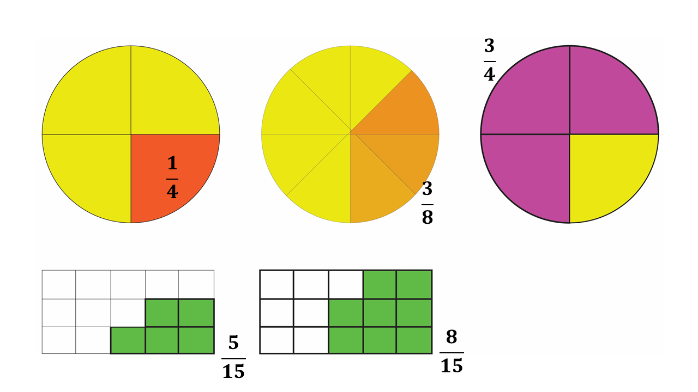

Fractions
Let us first understand what fractions are.
Assume your mother gave you an orange to share with your 2 siblings. You may then decide to use a knife to slice the orange into 3 equal parts.
Each sibling will get one (1) part out of the three (3) equal parts that you sliced with the knife.
We say that each part of the sliced orange has a fraction of \(\frac{1}{3}\), that is, one out of three.
A fraction is defined as a part of a whole.
The orange was one whole (that is, \(1\)), until you sliced it into the various parts.
Below are some examples of fractions.
Fractions are usually written in the form \(\frac{a}{b}\).
\(* \hspace{0.5cm}\)\(\frac{a}{b} \Rightarrow\) You say, \(\mathbf{a}\) over \(\mathbf{b}\), or \(\mathbf{a}\) out of \(\mathbf{b}\). You can also simply say, \(\mathbf{a}\) divided by \(\mathbf{b}\).
Given any fraction, say \(\frac{a}{b}\), the top part (\(\mathbf{a}\)) is called the numerator while the bottom part \(\mathbf{b}\) is called the denominator.
When you divide the numerator by the denominator, the value that you obtain is called a quotient.
We will learn more about these definitions in a later lesson.
Remember:
\[\frac{a}{0} = undefined\]
That is, any number divided by zero (0) does not exist in the set of real numbers, hence the denominator of fractions should not be zero (0).
Types of Fractions
Let's now look at the types of fractions that we have.
1. Common (Proper) Fractions
Common fractions are fractions whose numerator is smaller (or less) than the denominator.
Examples of common fractions are \(\frac{1}{2}\), \(\frac{1}{3}\), \(\frac{1}{4}\),\(\frac{1}{5}\), etc.
Common fractions usually take their names from the number of parts that the whole is divided into. So for instance:
\(*\) \(\frac{1}{2} \Rightarrow\) is usually called one-half
\(*\) \(\frac{2}{3} \Rightarrow\) is usually called two-third
\(*\) \(\frac{1}{4} \Rightarrow\) is usually called one-fourth
And so on.
Common fractions are sometimes called proper fractions.
2. Improper Fractions
Improper fractions on the other hand are fractions whose numerators are larger (or bigger) than their denominators.
Examples of improper fractions are as follows:
1. \(\frac{12}{5} \Rightarrow\) you say, twelve divided by five, or twelve over five.
2. \(\frac{22}{7} \Rightarrow\) you say, twenty-two divided by seven, or twenty-two over seven.
3. \(\frac{13}{12}\)
You are required to learn how to change improper fractions to mixed fractions.
3. Mixed Fractions
Mixed fractions are fractions which include a combination of a whole number and a proper fraction (or common fraction).
Examples of mixed fractions are as follows:
1. \(2\frac{2}{5} \Rightarrow\) which is the mixed fraction you get when you convert \(\frac{12}{5}\).
\(\hspace{0.5cm}\)You say, two whole number, two over five.
2. \(3\frac{1}{7} \Rightarrow\) which is the mixed fraction you get when you convert \(\frac{22}{7}\)
\(\hspace{0.5cm}\) You say, three whole number, one over seven.
3. \(1\frac{1}{12} \Rightarrow\) which is the mixed fraction you get when you convert \(\frac{13}{12}\)
We will learn in a later lesson, how to change an improper fraction to a mixed fraction, and vice versa. In Mathematics, it is always a good practice to change improper fractions to mixed fractions.